00이 장의 목표
07장에서 만든 MicroBlaze V + AXI GPIO + AXI UART Lite 회로에 Timer IP를 추가합니다. 실제 Vivado GUI를 따라가며 비트스트림과 Vitis 프로그램을 완성합니다.
- Basys3
- 32-bit Timer
- 100 MHz
- 0x41C00000
- Polling
01AXI Timer 실습 목표
AXI Timer를 이용하여 Basys3의 LED0를 약 0.5초마다 켰다 껐다 반복합니다. Timer(타이머, 일정 시간 경과를 세는 주변장치)는 CPU가 시간을 직접 지연시키지 않고 하드웨어에서 시간 경과를 셀 수 있게 합니다.
| Timer 만료 확인 | LED0 출력 |
|---|---|
| 첫 번째 만료(약 0.5초) | LED0 ON |
| 두 번째 만료(약 1.0초) | LED0 OFF |
| 세 번째 만료(약 1.5초) | LED0 ON |
08장에서는 07장의 GPIO·UART 하드웨어를 유지하고 AXI Timer를 추가합니다. CPU는 Timer의 만료 상태를 반복 확인하는 Polling(폴링, 상태 반복 확인) 방식으로 LED0를 제어하며, Interrupt(인터럽트, CPU 실행 흐름에 이벤트를 알리는 방식)는 09장에서 진행합니다.
0207장 하드웨어에 무엇을 추가하는가
기존 BRAM·GPIO·UART·Clock·Reset은 유지합니다.
| 기능 | 07장 | 08장 |
|---|---|---|
| MicroBlaze V / 16 KiB BRAM | 존재 | 유지 |
| AXI GPIO · LED/SW | 존재 | 유지 |
| AXI UART Lite · Echo | 존재 | 유지 |
| AXI SmartConnect | 2개 Slave 연결 | 3개 Slave 연결 |
| AXI Timer | 없음 | 신규 추가 |
| Interrupt Controller | 없음 | 09장에서 연결 |
타이머 IP는 FPGA 외부 핀을 사용하지 않습니다. LED 출력은 06장에서 연결한 AXI GPIO를 그대로 재사용합니다.
03AMD PG079 · AXI Timer 내부 구조
AXI4-Lite(악시 포 라이트, 단일 레지스터 읽기·쓰기용 인터페이스)로 CPU가 Timer 레지스터를 설정하고 읽습니다. Counter는 CPU 코드가 매 순간 감소시키는 것이 아니라 s_axi_aclk에 따라 하드웨어에서 독립적으로 진행됩니다.
04AMD 레지스터 표 · Timer 0을 사용
아래 주소 오프셋은 AMD PG079 Register Space의 Table 1과 같은 값입니다.
| Offset | Register Name | 역할 |
|---|---|---|
0x00 | TCSR0 | Timer 0 Control / Status |
0x04 | TLR0 | Timer 0 Load Register |
0x08 | TCR0 | Timer 0 현재 카운트 값 |
0x10 | TCSR1 | Timer 1 Control / Status (이번 장 미사용) |
0x14 | TLR1 | Timer 1 Load Register |
0x18 | TCR1 | Timer 1 현재 카운트 값 |
실제 Timer Base Address는 0x41C00000입니다. 예: TCSR0의 주소는 0x41C00000, TLR0는 0x41C00004입니다.
TCSR0의 주요 설정은 T0INT(bit 8, 만료 플래그), ENT0(bit 7, 카운터 동작), ENIT0(bit 6, 인터럽트 출력), LOAD0(bit 5, 값 적재), ARHT0(bit 4, 자동 재적재), UDT0(bit 1, 감소), MDT0(bit 0, Generate 모드)입니다. AMD TCSR0 전체 비트
050.5초를 만드는 카운트 값
실제 연결한 Timer의 AXI Clock은 100 MHz입니다.
0.5 s ÷ 10 ns = 50,000,000 clocks
TLR0 = 50,000,000 − 2 = 49,999,998 = 0x02FAF07E
PG079의 Down-count Generate Mode에서는 TIMING_INTERVAL = (TLRx + 2) × AXI_CLOCK_PERIOD입니다. AMD PG079 · Generate Mode
다음 단계에서는 32비트 Down Count + Auto Reload(오토 리로드, 자동 재적재) + Polling(폴링, CPU 반복 확인)을 사용합니다. Interrupt(인터럽트, 이벤트 알림 신호) 배선은 09장에서 진행합니다.
0607장 성공 프로젝트 열기
이후 08장 복제본을 만들기 전에 확인한 화면입니다.

soc07_axi_uartlite.xpr 오픈. write_bitstream Complete, WNS +0.817 ns는 07장0708장 Project·Block Design 분리
07장 파일을 덮어쓰지 않습니다.
- Vivado Project Save As
File → Project → Save As. Project namesoc08_axi_timer, Project location~/soc/hw. Create project subdirectory와 Include run results 선택 후 OK.
GUI 02 · 08장 Vivado Project Save As — 기존 07장 프로젝트 보존클릭하면 확대 - Block Design Save As08장 복제본에서 기존
soc07_axi_uartlite.bd를 열고File → Save Block Design As. Design namesoc08_axi_timer, Directory<Local to Project>, Add to source setDesign Sources선택 후 OK.
GUI 03 · 08장 Block Design Save As — 프로젝트 내부로 분리클릭하면 확대 - 기존 07장 파일 보호08장 Sources에서 새
soc08_axi_timer.bd를 사용하며, 오래된 07장 래퍼가 Top이면 나중에 08장 새 래퍼를 생성·지정합니다. 소스 삭제 옵션을 사용하지 않습니다.
08AXI Timer IP 추가·설정
Timer 0만 실제 소프트웨어에서 사용합니다.
- AXI Timer 추가08장 Block Design에서
+(Add IP) →AXI Timer검색 → 추가. 블록 인스턴스axi_timer_0확인.
GUI 04 · 07장 구성에 axi_timer_0 IP 추가 — 아직 연결 전클릭하면 확대 - Re-customize IP
axi_timer_0더블클릭 → Enable 64-bit mode 해제, Width of the timer/counter (bits) = 32 확인. Enable Timer 2는 현재 체크된 상태로 두어도 됩니다. 이번 코드에서 Timer 0만 사용합니다. OK.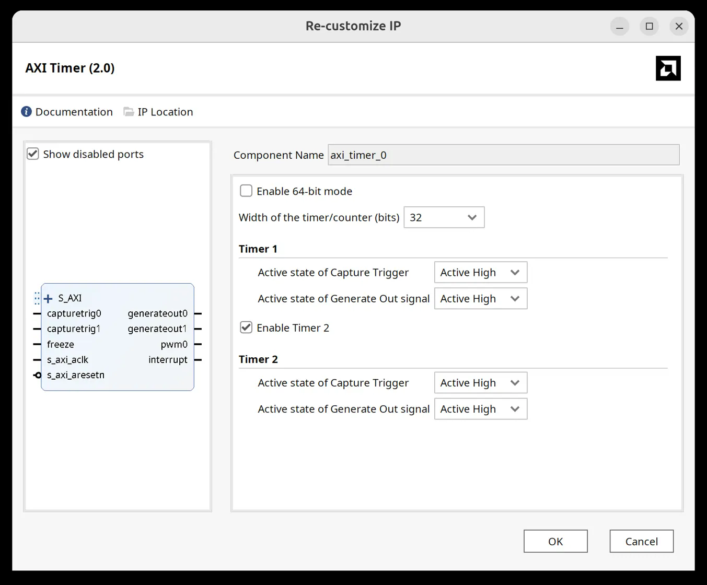
GUI 05 · AXI Timer 2.0 설정 — 32비트, 64-bit 모드 해제클릭하면 확대 - 외부 이벤트 미사용
capturetrig0/1,generateout0/1,pwm0,interrupt는 이번 실습에서 외부로 연결하지 않습니다.
09AXI · Clock · Reset 연결
기존 SmartConnect를 재사용합니다.
- Run Connection Automation
axi_timer_0/S_AXI만 대상으로 Automation 실행. Master/microblaze_riscv_0 (Periph), Bridge IP/axi_smc, 100 MHz Clock 확인 후 OK.
GUI 06 · Connection Automation — 기존 axi_smc로 S_AXI 연결클릭하면 확대 - 완성된 AXI 경로
microblaze_riscv_0/M_AXI_DP→axi_smc→ GPIO/UART/Timer의 각S_AXI. Timer의s_axi_aclk과s_axi_aresetn도 연결된 화면입니다.
GUI 07 · AXI SmartConnect → GPIO/UART/Timer 연결 완료클릭하면 확대 - Interrupt 미연결 확인Timer의
interrupt포트는 외부에 연결하지 않습니다. Polling에서는TCSR0.T0INT상태를 AXI Read로 확인합니다.
10Address Editor · 실제 Timer 주소 확정
실제 Address Editor 확인.
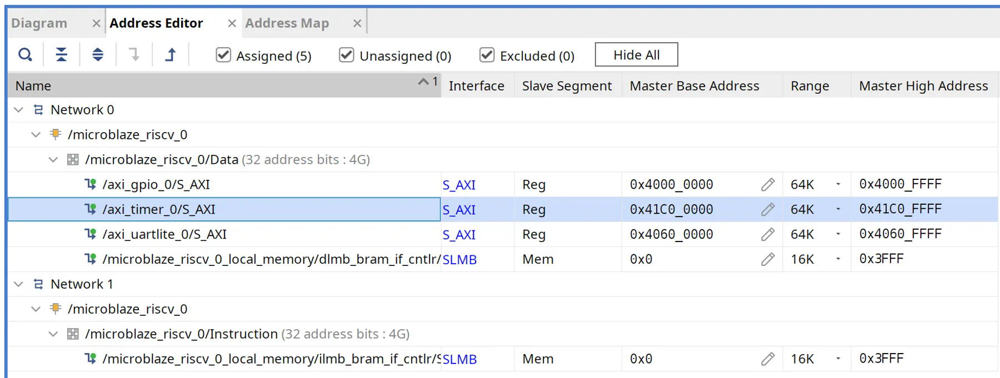
| IP | Base | High | Range |
|---|---|---|---|
| Local BRAM | 0x00000000 | 0x00003FFF | 16 KiB |
| AXI GPIO | 0x40000000 | 0x4000FFFF | 64 KiB |
| AXI UART Lite | 0x40600000 | 0x4060FFFF | 64 KiB |
| AXI Timer | 0x41C00000 | 0x41C0FFFF | 64 KiB |
11Validate Design
기존 화면에서 다시 Block Design을 열고 정합성을 검사합니다.
- Block Design 저장Diagram 탭으로 돌아간 뒤
Ctrl+S로 현재 08장 BD를 저장합니다. - Validate Design 실행Diagram 상단 Validate Design 아이콘을 클릭하거나 F6을 누릅니다.
- 결과 확인
Validation successful표시와 Messages 창의 Error·Critical Warning 유무를 확인합니다. 경고가 있다면 캡처 후 조치합니다. 바로 넘어가지 않습니다.
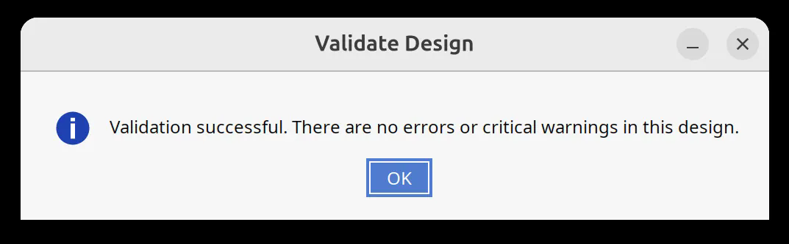
1208장 Wrapper·Top 확인
07장 래퍼를 실수로 최상위로 사용하면 Timer가 합성에 포함되지 않을 수 있습니다.
- 08장 BD 선택Sources → Design Sources에서
soc08_axi_timer.bd를 확인합니다. - HDL Wrapper 생성새 BD를 우클릭 → Create HDL Wrapper → Let Vivado manage wrapper and auto-update → OK.
soc08_axi_timer_wrapper생성. - Set as Top
soc08_axi_timer_wrapper를 우클릭 → Set as Top. 굵게 표시된 Top이 08장 래퍼인지 확인합니다. - 기존 외부 포트 유지Wrapper의
clk,btnC,led[15:0],sw[15:0],UART_0관련 RX/TX 포트를 07장과 대조합니다. 새로운 Timer 외부 포트는 없어야 합니다.
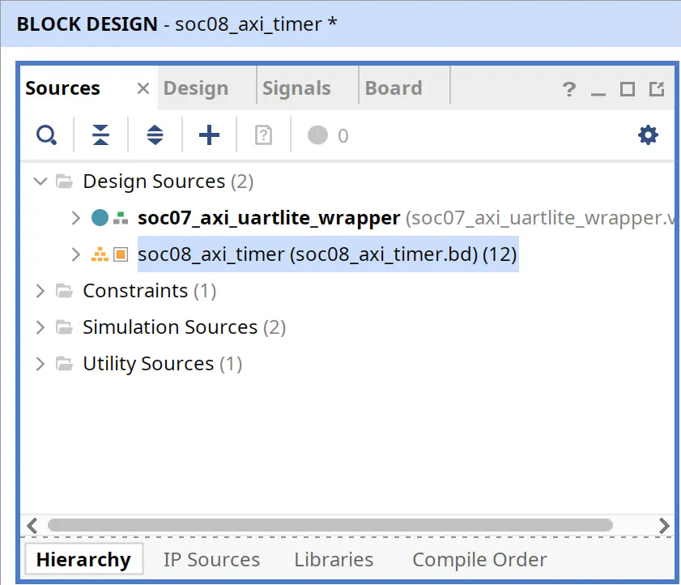

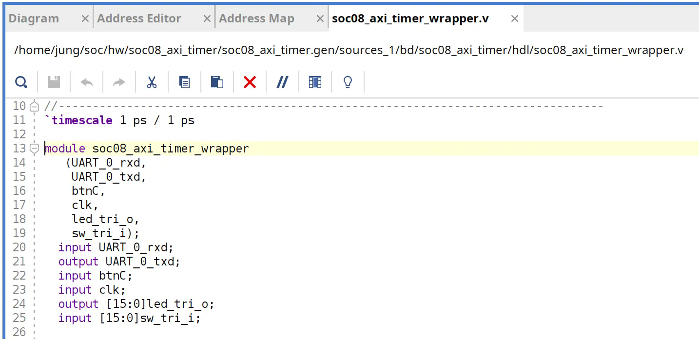
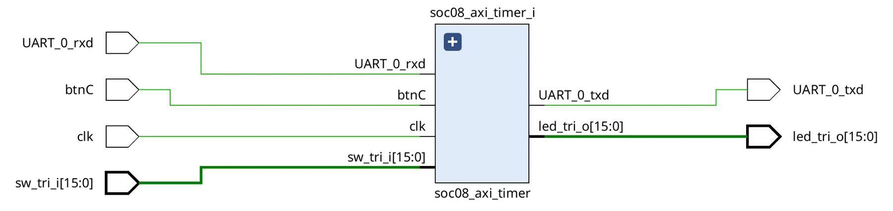
13XDC 유지·핀 중복 확인
08장에서는 외부 핀을 새로 할당하지 않습니다.
- 기존 제약 확인Sources → Constraints에서 07장의 정상 작동 XDC가 08장 복제본에 포함돼 있는지 확인합니다.
- 경로 점검XDC Properties의 File Path가
soc07_axi_uartlite이전 장 폴더를 직접 가리키지 않는지 확인합니다. 그렇다면 복사본을 08장 프로젝트에 포함시킨 뒤 소스 참조를 변경합니다. - 중복 제약 방지
basys3_axi_timer_led.xdc예제의 LED/SW만 있는 불완전한 파일로 XDC를 교체하지 않습니다. Clock W5, Reset U18, UART RX/TX B18/A18 및 기존 LED/SW 핀 제약을 유지합니다.
14Generate Bitstream
07장의 Bitstream과 구별되는 08장 결과물을 생성합니다.
- 비트스트림 생성Flow Navigator → Generate Bitstream. 하위 합성/구현이 필요하다는 창이 나오면 Yes, Launch Runs는 설정 확인 후 OK.
- 완료 확인Design Runs에서
synth_1,impl_1,write_bitstream Complete를 확인합니다. Error 또는 Critical Warning이 있는지 먼저 봅니다. - 타이밍 확인Implementation의 Report Timing Summary에서 WNS/TNS를 확인합니다. 07장 WNS +0.817 ns를 08장 결과로 복사하지 않습니다.
- Bitstream 파일 경로08장
.runs/impl_1/아래soc08_axi_timer_wrapper.bit등 실제 생성 파일명을 확인합니다. 래퍼 이름에 따라 달라질 수 있습니다.

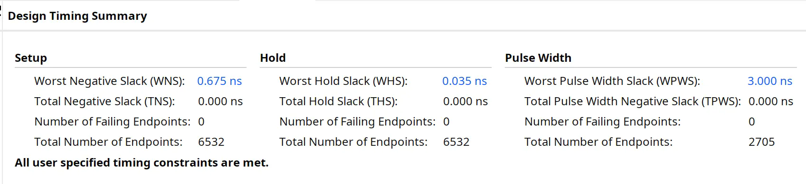


DRC 주의: 실제 결과에 Warning 8건이 관측되었습니다. Bitstream 생성·LED 동작 성공과는 별도로 원인 분석이 남아 있습니다.
1508장 XSA 내보내기
새 하드웨어 사양을 Vitis로 가져갑니다.
- Export HardwareVivado → File → Export → Export Hardware → Next.
- Include bitstreamOutput에서 Include bitstream을 선택합니다.
- 독립 XSA 저장파일 이름
soc08_axi_timer, 저장 경로~/soc/hw/soc08_axi_timer로 지정 후 Finish. - 파일 확인실제
soc08_axi_timer.xsa생성 여부와 파일 위치를 확인합니다. 기존 07장 XSA는 덮어쓰지 않습니다.

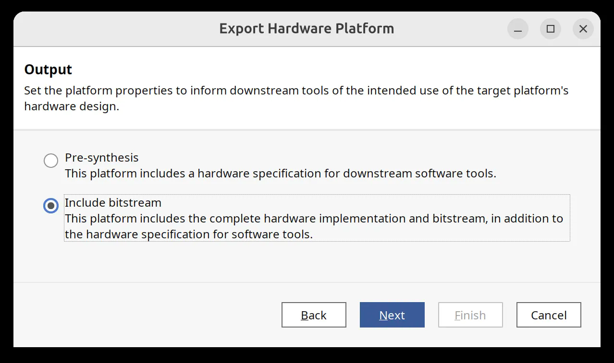
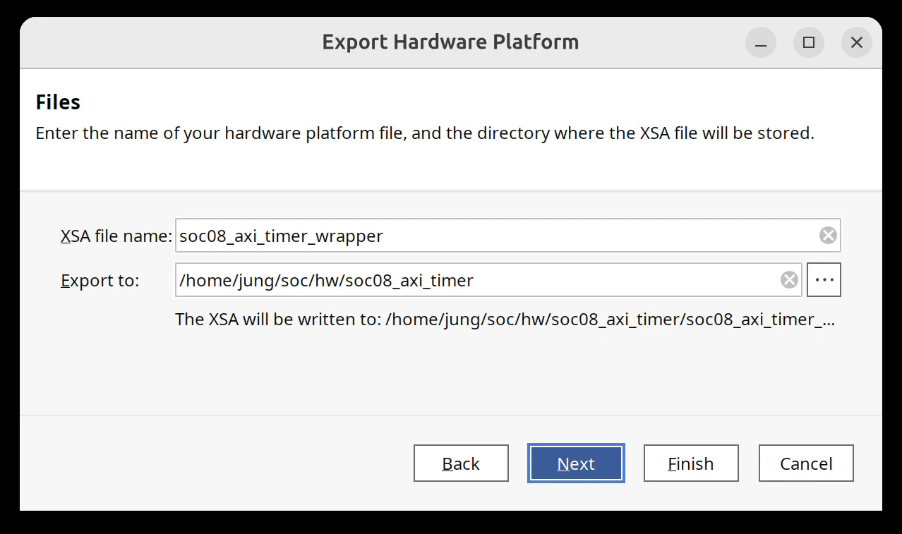
16Vitis 08장 Platform 생성
07장 플랫폼을 덮어쓰지 않습니다.
- Platform 만들기Vitis Unified IDE 2024.2 → File → New Component → Platform.
- Name and LocationComponent name
soc08_axi_timer_platform, 작업공간~/soc/sw. - Hardware Design XSAHardware Design을 선택하고
~/soc/hw/soc08_axi_timer/soc08_axi_timer_wrapper.xsa지정. - OS / ProcessorOperating System
standalone, Processormicroblaze_riscv_0를 선택. Finish. - Platform BuildFLOW → Component
soc08_axi_timer_platform→ Build. 실제 종료 메시지를 확인합니다. - Driver / xparameters 확인Platform이 생성한
xparameters.h에서XTMRCTRBase Address와XGPIOBase Address 매크로를 확인합니다. Timer는 실제 주소0x41C00000여야 합니다.SDT사용 여부와 실제 매크로 이름은 생성 파일로 판정합니다.
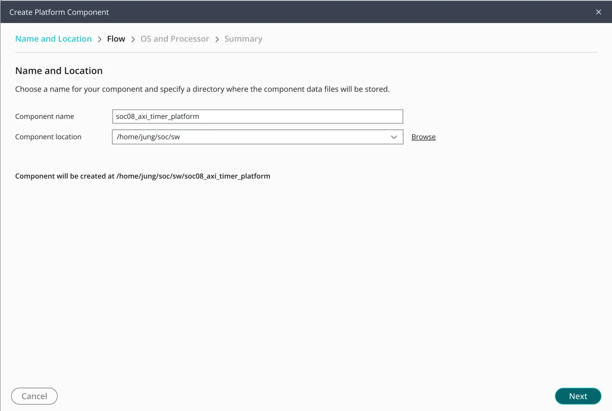
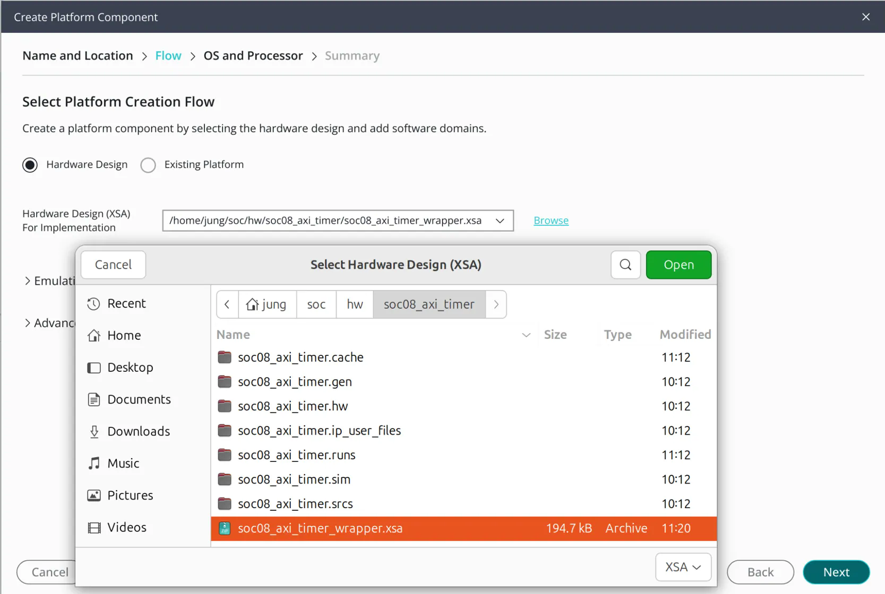
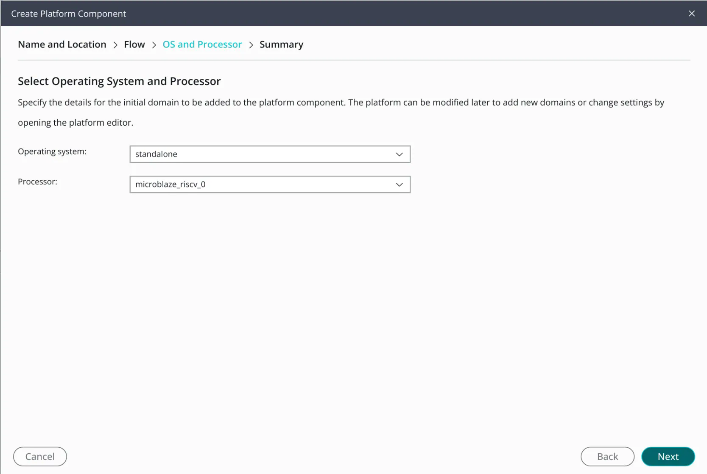

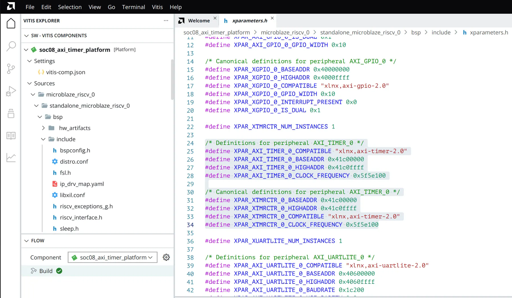
17Timer Application 생성
07장의 UART Echo 애플리케이션을 덮어쓰지 않습니다.
- 새 애플리케이션File → New Component → Application 또는 Empty Application 템플릿 생성 흐름. 이름
soc08_axi_timer. - Platform 연결Platform에
soc08_axi_timer_platform을, Domain에standalone_microblaze_riscv_0을 선택. - 소스 배치Application →
src/main.c에 다음 섹션의 코드를 배치합니다. 기존에main()이 있다면 중복이 없도록 정리합니다. - BSP 확인필요한 드라이버
xtmrctr.h,xgpio.h가 빌드에서 인식되는지 확인합니다. 누락 시 Platform 설정에서 해당 드라이버를 확인합니다.
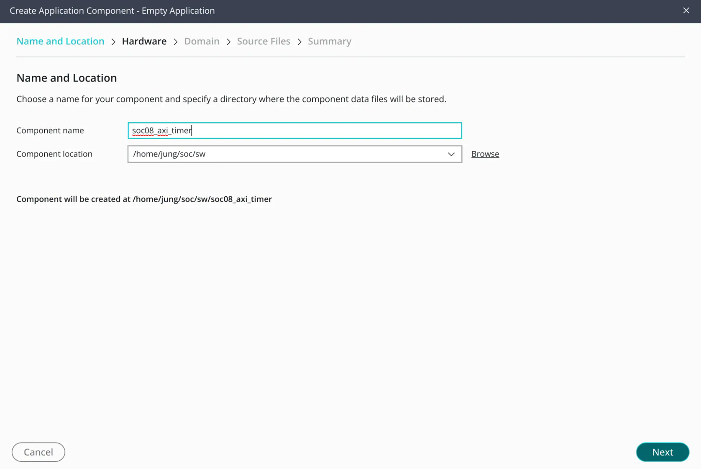
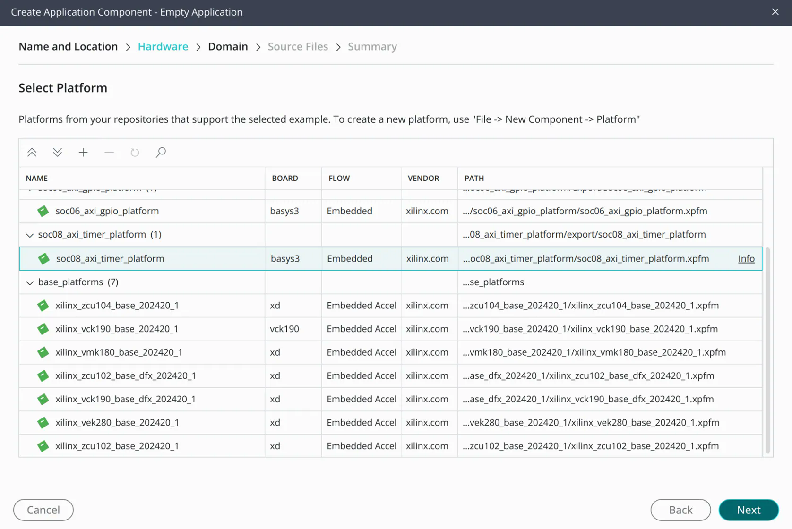

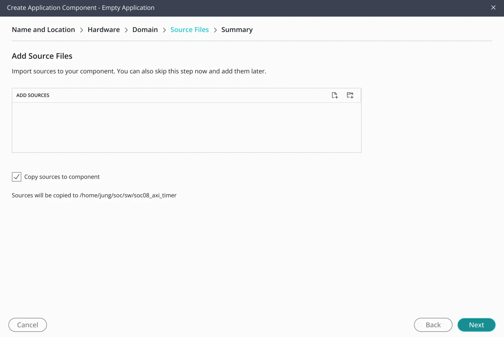
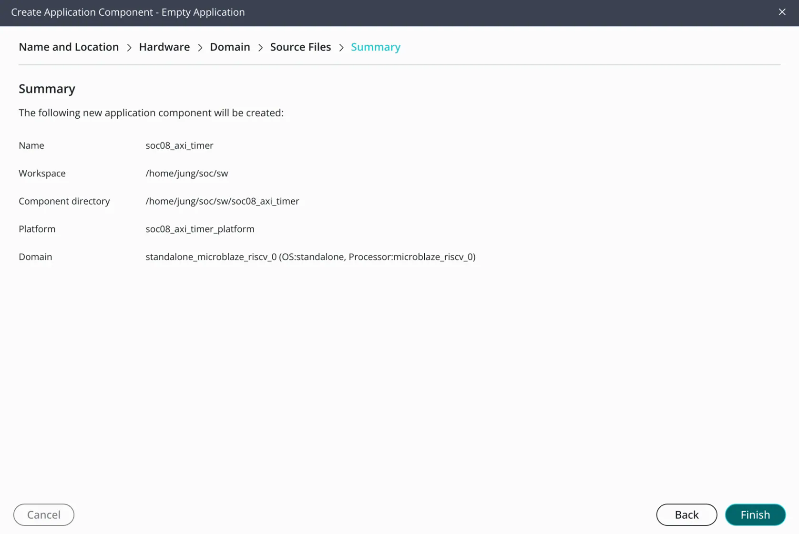
18main.c · 0.5초 Timer Polling 코드
하드웨어를 직접 세는 것은 Timer IP이며, CPU는 만료 상태를 확인해 LED를 변경합니다.
#include "xparameters.h"
#include "xtmrctr.h"
#include "xgpio.h"
#include "xstatus.h"
#include "xil_types.h"
/* SoC08: Timer0 0.5초 Polling, 기존 AXI GPIO LED0 출력 */
#define TIMER0 0U
#define GPIO_LED_CHANNEL 1U
#define LED0_MASK 0x00000001U
/* 100 MHz × 0.5 s = 50,000,000 clocks, PG079: TLR + 2 */
#define TIMER_RESET_VALUE (50000000U - 2U)
#ifndef SDT
#define TIMER_DEVICE_ID XPAR_TMRCTR_0_DEVICE_ID
#define GPIO_DEVICE_ID XPAR_GPIO_0_DEVICE_ID
#else
#define TIMER_BASEADDR XPAR_XTMRCTR_0_BASEADDR
#define GPIO_BASEADDR XPAR_XGPIO_0_BASEADDR
#endif
static XTmrCtr Timer;
static XGpio Gpio;
/* Vitis Debug Watch로 확인할 변수 */
volatile u32 expire_count = 0U;
volatile u32 led_state = 0U;
volatile u32 timer_value = 0U;
static int init_gpio(void)
{
#ifndef SDT
return XGpio_Initialize(&Gpio, GPIO_DEVICE_ID);
#else
return XGpio_Initialize(&Gpio, GPIO_BASEADDR);
#endif
}
static int init_timer(void)
{
int status;
#ifndef SDT
status = XTmrCtr_Initialize(&Timer, TIMER_DEVICE_ID);
#else
status = XTmrCtr_Initialize(&Timer, TIMER_BASEADDR);
#endif
if (status != XST_SUCCESS) return status;
status = XTmrCtr_SelfTest(&Timer, TIMER0);
if (status != XST_SUCCESS) return status;
/* (유지) Down Count + Auto Reload, Interrupt 출력은 미사용 */
XTmrCtr_SetOptions(&Timer, TIMER0,
XTC_DOWN_COUNT_OPTION | XTC_AUTO_RELOAD_OPTION);
XTmrCtr_SetResetValue(&Timer, TIMER0, TIMER_RESET_VALUE);
XTmrCtr_Start(&Timer, TIMER0);
return XST_SUCCESS;
}
/* 만료 비트 T0INT는 1을 쓰면 0으로 지워진다. */
static void clear_timer_expired(void)
{
u32 csr = XTmrCtr_GetControlStatusReg(Timer.BaseAddress, TIMER0);
XTmrCtr_SetControlStatusReg(Timer.BaseAddress, TIMER0,
csr | XTC_CSR_INT_OCCURED_MASK);
}
int main(void)
{
if (init_gpio() != XST_SUCCESS) return XST_FAILURE;
if (init_timer() != XST_SUCCESS) return XST_FAILURE;
/* LED0 초기 소등: 기존 AXI GPIO 채널 1 출력 */
XGpio_DiscreteWrite(&Gpio, GPIO_LED_CHANNEL, led_state);
while (1) {
timer_value = XTmrCtr_GetValue(&Timer, TIMER0);
if (XTmrCtr_IsExpired(&Timer, TIMER0)) {
clear_timer_expired();
expire_count++;
led_state ^= LED0_MASK; /* 0 → 1 → 0 반복 */
XGpio_DiscreteWrite(&Gpio, GPIO_LED_CHANNEL, led_state);
}
}
}
| 코드 | 의미 |
|---|---|
XTmrCtr_SetResetValue() | 49,999,998을 TLR0에 설정 |
XTmrCtr_Start() | Timer 0 시작 |
XTmrCtr_IsExpired() | 만료 상태 폴링 |
clear_timer_expired() | T0INT 플래그를 1 쓰기로 제거 |
XGpio_DiscreteWrite() | LED0 켜기/끄기 |
07.1장과 같은 형식으로 함수·변수·C 문법과 실제 Timer/GPIO 동작을 연결했습니다. 전체 main.c는 변경하지 않았습니다.
19Application Build
실행 파일을 생성하고 경고·오류를 확인합니다.
- Application BuildFLOW 패널의 Component에서
soc08_axi_timer선택 → Build. - 컴파일 오류 확인
XTmrCtr_Initialize,XPAR_XTMRCTR_0_BASEADDR,XPAR_XGPIO_0_BASEADDR관련 메시지가 있으면xparameters.h내용과 일치 여부를 확인합니다. - 성공 판정Build Finished successfully 및
soc08_axi_timer.elf파일 생성 확인. 빌드 성공 전에는 FPGA 프로그램으로 넘어가지 않습니다.
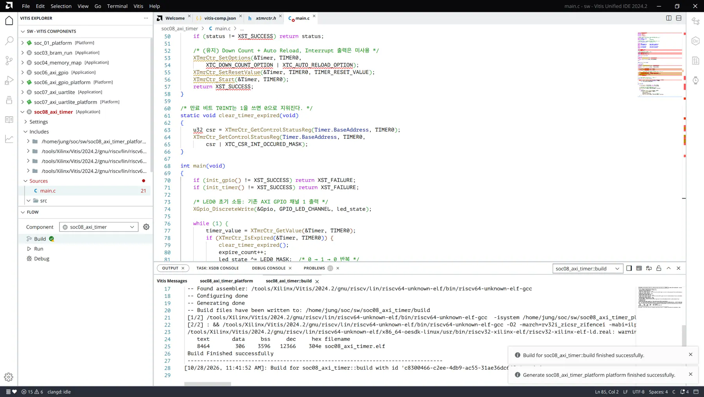
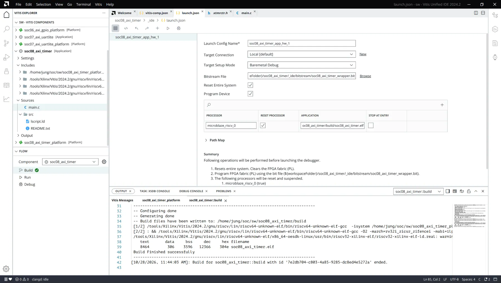
20FPGA Program · Run/Debug
07장 UART Echo를 다시 제작하지 않습니다.
- Basys3 연결USB(JTAG) 연결과 전원을 확인합니다. JP1은 JTAG 모드로 유지합니다.
- 08장 비트스트림 다운로드Vivado Hardware Manager → Open Target / Auto Connect → Program Device에서 08장 Bitstream 선택. 07장 Bitstream을 다시 사용하지 않습니다.
- Vitis Run/Debug 설정08장 Application FLOW에서 Debug 설정(
launch.json탭)을 열어 08장 ELF, 플랫폼, 비트스트림 및microblaze_riscv_0를 확인합니다. - 디버그 시작Debug 실행 후 타깃이 인식되는지 확인합니다. 이전에 확인된 환경에서는 중앙 상단
launch.json탭을 열고 Debug를 실행했을 때 정상 진입했습니다. 이를 만능 해결책으로 단정하지 않습니다. - LED 관측Continue로 실행하여 LED0의 ON/OFF 반전을 관측합니다. 07장의 moserial Echo 실습을 반복하지 않습니다.

21실제 결과 확인 · LED0·Watch
아래 시간표는 설계상 목표 주기이며, 실제 LED 점멸 및 Watch 결과는 별도로 확인합니다.
| 시간(예상) | expire_count | LED0 |
|---|---|---|
| 0 s | 0 | OFF |
| 0.5 s | 1 | ON |
| 1.0 s | 2 | OFF |
| 1.5 s | 3 | ON |
Debug Watch에서 expire_count, led_state, timer_value를 확인합니다. timer_value는 실행 중 계속 변화하며 Breakpoint로 CPU를 멈춰도 타이머 자체가 자동 정지하지 않을 수 있습니다.

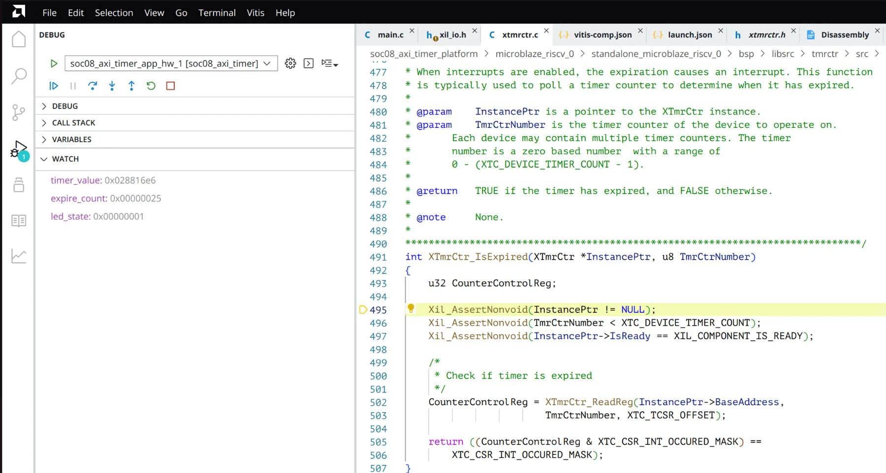
Debug Watch 확인값
| 변수 | 최종 관측값 | 의미 |
|---|---|---|
timer_value | 0x028816E6 | Timer 카운터 값 |
expire_count | 0x00000025 | 37회 만료 처리 |
led_state | 0x00000001 | LED0 ON |
22오류가 발생할 때 점검
07장 반복 실습이 아닌 08장의 신규 오류만 우선 확인합니다.
| 증상 | 우선 확인 |
|---|---|
| Validate Design 오류 | Timer S_AXI·Clock·Reset 연결 |
| 08장 Timer가 구현에 포함되지 않음 | soc08_axi_timer_wrapper가 Top인지 |
| 경고: Unconstrained ports | 07장 XDC 경로와 Wrapper 외부 포트명 |
| Vitis Timer 주소 매크로가 없음 | 08장 XSA 사용, Platform Build, xparameters.h |
| LED가 전혀 변하지 않음 | 08장 Bitstream 다운로드 / Timer Reset·Clock·AXI |
| 한 번만 LED가 바뀜 | XTC_AUTO_RELOAD_OPTION 설정 |
| LED가 빠르게 반복됨 | Timer 클록 100 MHz·TLR0 값·T0INT Clear |
| 디버그 타깃 미검출 | 08장 Bitstream / launch.json / JTAG 연결 |
23완료 기준 · 다음 09장 준비
09장은 AXI Interrupt Controller를 다루므로 08장에서 인터럽트 배선은 수행하지 않습니다.
| 확인 항목 | 현재 상태 |
|---|---|
| 07장 프로젝트 보존 + 08장 독립 복제 | GUI에서 확인 |
| AXI Timer 32비트 / SmartConnect 연결 | GUI에서 확인 |
| Timer 0x41C00000 / 64 KiB 할당 | GUI에서 확인 |
| Validate Design / Wrapper / XDC | 확인 |
| 08장 Bitstream / XSA | 확인 |
| Vitis 08장 Platform / ELF Build | 확인 |
| Basys3 LED0 0.5초 반전 / Watch | 보드에서 확인 |